Script 000021E2
「…………！」
「気配……」
「誰かが、この世界にいるようです」

「いえ、この世界に存在できるのは案内人であるわたくしと、お客様であるあなた様だけ」
「あるいは、案内人であるわたくしが招待した者のみ」
「だから、わたくしとあなた以外、存在できないはずなのですが――」
「…………！
来ますよ……！」
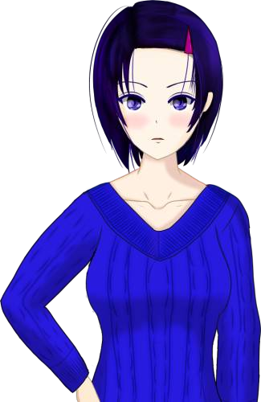
「ん？ なんだここは？」

「…………！？
あなたは……！」
「え！？ お前は……！
私が、2人……！？」
「…………
なるほど、そういうことですか。
この世界にはわたくしとあなた様しか存在できない」
「逆に言えば、別の次元から紛れ込んできたわたくし自身なら存在できる。
あなたは、どの次元のわたくしなのでしょう？」
「え？ なんか何言ってるかよく分からないんだけど……」
「あーまああれか、夢だなこりゃ。
ははは、変な夢だな」
「私、今日早起きしなきゃいけないんだけどなあ。
今日はなつみと五島で、かんざしを埋めに行くんだ。
あんまり疲れる夢は勘弁だぜ……」
「なるほど……最後に見た次元のわたくし……。
真相にたどり着き、死月妖花を滅ぼした次元……」
「しかし、なぜその次元のわたくしがここに……」
「何か、助けを呼ぶ声が聞こえてさ。だからここに来たんだよ」
「この世界から助け出して、私の住む世界に連れて行けばいいみたいだけど……」
「でもまあ、私が2人いたら大騒ぎだな、ははは！」
「じゃあこうしよう、お前と私は同じ人間。
だから、1つになればいいだろ？」
「あなたと1つに……？」
「そう、そうすればこの世界から助け出せる。
ほら早くしろよ、目が覚めちまう」

「…………
あなた様……。
わたくし、どうすれば……」
「大変お疲れ様でした、あなた様。
ここがこの世界の終着点。これがこの世界に隠されていた真相」
「思えばどの事件も、大切な人を守りたい――守りたいから、やむを得ず外道に落ちてしまった。
そのような背景ゆえに起きてしまったのだと思います」
「もう少し勇気があれば、もう少し誰かが助けてあげられたら――。
きっとこれまで見てきた数々の事件は起こらなかったのでしょう」
「あなた様、わたくしは満足です。
私がなぜなつみを手に掛けたのかを知ることができた」
「しかし、わたくしがいた世界のなつみはもう戻ってこない。これはもう、変えられない事実です」
「…………正直、どうしたらいいのか分かりません」
「いえ、あなた様がこの世界を望まれる限り存在し続けます」
「わたくしは、もうしばらくこの世界にいようかと――」
「よし、話は決まったな！ 私とお前は、1つだ」
「…………」
「一体、何があったのでしょう……」
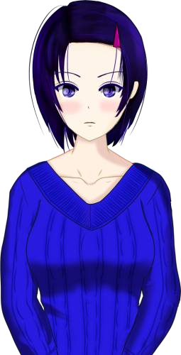
「あなた様、わたくしに何か変化はありますか？」
「本当に……！？」
「…………ありがとうございます……」
「しかし……何でしょう、この感覚は」
「今までにない記憶が頭の中に……」
「そうか、1つになったから別次元の記憶も持っている。
わたくしは今、2つの次元の新村春花が1つになった姿」
「…………
どうやら、まだ客人がいるようです。
最後の次元のわたくしが案内した客人……」
「案内人であるわたくしの許可があれば――」
「春花！」
video: エンディングパーティクル.wmv
「なつみ……！」
video: エンディングパーティクル.wmv
「どうしたの？ こんなところで」
video: エンディングパーティクル.wmv
「ああいや……」
video: エンディングパーティクル.wmv
「新村先輩！」
video: エンディングパーティクル.wmv
「…………
はは、今までにないほど、この世界がにぎやかになったな」
video: エンディングパーティクル.wmv
「おやおや？ どなたですか？ この方は。
新村先輩のお知り合い？」
video: エンディングパーティクル.wmv
「あ、ああ……
あなたさんって言ってな、私の大切な人だ」
video: エンディングパーティクル.wmv
「へー！ どうもどうも！ いつも先輩がお世話になっております！」
video: エンディングパーティクル.wmv
「ほら春花、今日は朝早いんだから、そろそろ起きないと。
先に待ってるね」
video: エンディングパーティクル.wmv
「先輩、寝坊しちゃダメですよ！」
video: エンディングパーティクル.wmv
「はは、なつみが……生きてる……」
video: エンディングパーティクル.wmv
「あなた様、わたくしには行くべきところがあるようです」
video: エンディングパーティクル.wmv
「そろそろお別れです」
video: エンディングパーティクル.wmv
「いえ、最後くらい、ちゃんと私らしく、私の言葉で挨拶したいと思います」
video: エンディングパーティクル.wmv
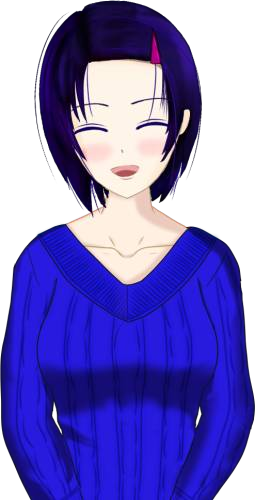
「ありがとな、あなた！
お前に会えて、本当に良かった！」
video: エンディングパーティクル.wmv
「ありがとう、私を救ってくれて」
video: エンディングパーティクル.wmv
「さようなら……」
video: エンディングパーティクル.wmv
「さようなら……」
video: エンディングパーティクル.wmv
「ええ、わたくしもです」
video: エンディングパーティクル.wmv
「あなた様も、どうぞお元気で」
video: エンディングパーティクル.wmv
「お疲れ様でした、あなた様。
全ての書簡、レポート、外伝のリファレンスを閲覧なさったようです」
video: エンディングパーティクル.wmv
「おそらく、この世界の背景は大方、解明されたと思われます」
video: エンディングパーティクル.wmv
「その影響でしょうか？ 何やらこの世界に、わずかばかりの変化が生じているようです」
video: エンディングパーティクル.wmv
「ええ。でもそんなはずは……」
video: エンディングパーティクル.wmv
「いえ、広がるというよりは……何か、変化のようなものが……」
video: エンディングパーティクル.wmv
「…………？ どうかなさいましたか？」
video: エンディングパーティクル.wmv
「はい、そのつもりですが……。いかがなさいました？」
video: エンディングパーティクル.wmv
「あなた様……！」
video: エンディングパーティクル.wmv
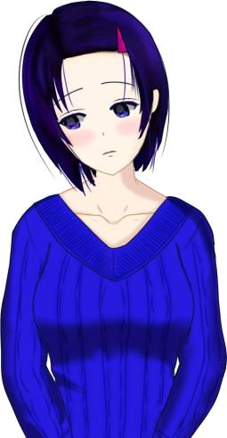
「どうして……！ わたくしがずっと苦しんでいたこと知っているのに、どうしてそんなことを……！」
video: エンディングパーティクル.wmv
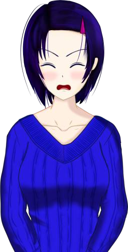
「いやだ！ なつみのいる世界に行けるのに！」
video: エンディングパーティクル.wmv
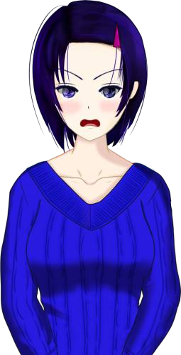
「そうだよ！ 今さら戻ってどうするんだよ！ もう私はあの世界を捨てたんだよ！」
video: エンディングパーティクル.wmv
「どんな思いでこの世界に逃げてきたか、あんたなら分かるだろ！」
video: エンディングパーティクル.wmv
「それで私にあの世界に帰れって！？ 冗談じゃない！ 私はもうあの世界で生きる資格がないんだよ！」
video: エンディングパーティクル.wmv
「何だよ……！ あんたなら私のこと、分かってくれると思ったのに……！」
video: エンディングパーティクル.wmv
「何を見てきた……！？ 全部死月妖花のせいだろ！？ あいつが……！」
video: エンディングパーティクル.wmv
「いや……。死月妖花のせいではあるけど……」
video: エンディングパーティクル.wmv
「でもみんなには悲劇を起こさない選択肢が残されていた」
video: エンディングパーティクル.wmv
「大事な人を失いたくない。大事な人を守りたい。それは、大切な人を失うのが苦しいから。苦しさから逃げるために……」
video: エンディングパーティクル.wmv
「お父さんはサクラさんを守るためにドローガを使い――」
video: エンディングパーティクル.wmv
「私はお母さんを守るためにクラスメイトを呪い――」
video: エンディングパーティクル.wmv
「お母さんは私を守るために女ケ沢市事件を起こし――」
video: エンディングパーティクル.wmv
「幸太郎さんとサクラさんはチガ姉を守るために、お母さんにドローガを送り――」
video: エンディングパーティクル.wmv
「お母さんは私を手放さないために、なつみのお父さんを殺し――」
video: エンディングパーティクル.wmv
「そして幸太郎さんは、サクラさんを失うことを恐れて死月妖花の誘惑に乗ってしまい――」
video: エンディングパーティクル.wmv
「みんな、悪魔のささやきに耳を貸してしまった。苦しさから逃げたくて、自分勝手な正義を貫いて……」
video: エンディングパーティクル.wmv
「だからたくさんの悲劇が起きてしまった」
video: エンディングパーティクル.wmv
「なるほど……。幸太郎さんもチガ姉も、自分のしてきたことから目を背けてきたから……。だからあんなことが起きた」
video: エンディングパーティクル.wmv
「でもみんな、最後は自分と向き合って、支えてくれる人と向き合って……」
video: エンディングパーティクル.wmv
「だけど……！
でもやっぱりあの世界は私にはつらすぎる！」
video: エンディングパーティクル.wmv
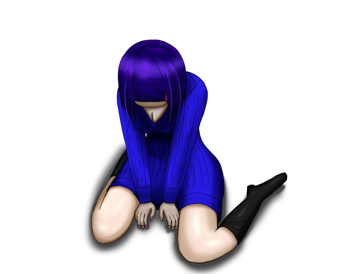
「なあ、教えてくれよ……！ どうしたらいいんだよ……。
私……怖いよ……。助けてくれよ……！」
video: エンディングパーティクル.wmv
「帰らなきゃいけないって分かってるのに……！ 帰るってあなたと約束したのに……！」
video: エンディングパーティクル.wmv
「怖い……怖いよお……。
やっぱり私には帰るなんて……無理だよ……」
video: エンディングパーティクル.wmv
「どうした？ 行かないのか？」
video: エンディングパーティクル.wmv
「私は……自分のしたことと向き合う。やっぱり私は、あっちの世界にいるべきだから」
video: エンディングパーティクル.wmv
「本当に大丈夫なのか？ お前、ずっと苦しんでいたんだろ？」
video: エンディングパーティクル.wmv
「確かに。
でも、私が逃げたら、悲しむ人たちがいる。
私はその人たちのためにも、帰ろうと思う」
video: エンディングパーティクル.wmv
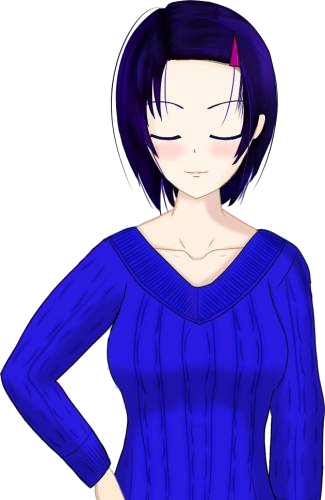
「そうか。うん、お前がそう思うなら、きっとそれが1番だ」
video: エンディングパーティクル.wmv
「でも、後悔はするなよ？ 応援してるぞ」
video: エンディングパーティクル.wmv
「ああ。なつみによろしくな」
video: エンディングパーティクル.wmv
「うん、じゃあな……」
video: エンディングパーティクル.wmv
「いい、これでいいんだ……」
video: エンディングパーティクル.wmv
「ありがとう。私のこと、ここまで後押ししてくれて」
video: エンディングパーティクル.wmv
「ここまでしてもらって、あなたにみっともない姿を見せるわけにいかない」
video: エンディングパーティクル.wmv
「あなた、この世界から見届けてくれ。
私が、どのようにして生きていくのか。自分のしたことと、どのように向き合うのか」
video: エンディングパーティクル.wmv
「私には、大切な人たちがいる。それは私がいた次元の人たち。他の誰でもない」
video: エンディングパーティクル.wmv
「なつみはもういないけど、あいつの最後の願いを、私が叶える」
video: エンディングパーティクル.wmv
「私は、もう目を開けるよ。これ以上大切な人たちに心配かけられないからさ」
video: エンディングパーティクル.wmv
「なあ、最後に聞かせてほしい。
この世界に来て、よかったって思ってくれるか？」
video: エンディングパーティクル.wmv
「そうか……それならよかった……。一応これでも、案内人を名乗ってたからさ」
video: エンディングパーティクル.wmv
「はは、そりゃそうだ。また逃げたりしたら、もうあなたに顔向けできないや……」
video: エンディングパーティクル.wmv
「覚えてるか？ 私と初めて会った時のこと」
video: エンディングパーティクル.wmv
「急にあなたが来たもんだから、能面つけて急いで登場してさ。もうちょっとマシな格好もありそうなのに」
video: エンディングパーティクル.wmv
「はは、なんだかずいぶん昔の事みたいだ。あなたとは長く一緒に過ごしたもんな」
video: エンディングパーティクル.wmv
「誰でもいいから来てほしいって思ってたのに……」
video: エンディングパーティクル.wmv
「ここへ来てくれたのが、あなたで本当によかった」
video: エンディングパーティクル.wmv
「つらくてこの世界に逃げて来たのに、この世界であなたに出会えて、本当に良かった」
video: エンディングパーティクル.wmv
「あなたとここで過ごした時間は、私の宝物だよ」
video: エンディングパーティクル.wmv
「じゃあ……元気でな」
video: エンディングパーティクル.wmv
「私は私のいるべき場所へ行くから」
video: エンディングパーティクル.wmv
「ありがとう、ここへ来てくれて。あなたも、私の大切な人だから」
video: エンディングパーティクル.wmv
「見ていてくれ。私、向こうの世界で必ず……」
video: エンディングパーティクル.wmv
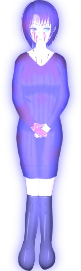
「さよなら、あなた」
video: エンディングパーティクル.wmv
「…………！」
video: エンディングパーティクル.wmv
「また変化が……！？」
video: エンディングパーティクル.wmv
「いったい、何が起きたのでしょう……」
video: エンディングパーティクル.wmv
「そう言えば、先ほどご覧いただいたリファレンスにおかしなものがありましたね」
video: エンディングパーティクル.wmv
「なつみも五島もわたくしも、みんな同じ夢を見ていた」
video: エンディングパーティクル.wmv
「助けを呼ぶ声が聞こえ、血まみれのわたくしが出てきて……」
video: エンディングパーティクル.wmv
「それに関係するのでしょうか」
video: エンディングパーティクル.wmv
「…………？」
video: エンディングパーティクル.wmv
「シナリオが始まりませんね」
video: エンディングパーティクル.wmv
「これはいったいどういうことでしょう……」
video: エンディングパーティクル.wmv
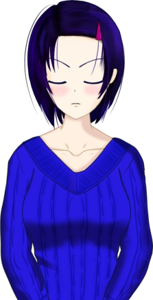
「分かった、もういい。
もうあんたの説得に耳を貸すつもりはない」
video: エンディングパーティクル.wmv
「残念だよ。私のこと、ちゃんと理解してくれていると思ったのに……」
video: エンディングパーティクル.wmv
「しょせんあんたも傍観者。しょせんあんたにとっては他人事。私が本当に望むものなんて全然考えてない」
「私は私のやり方で幸せをつかんでみせる」
「お、おいどうしたんだよ。何考えてんだよ！」
「お前はお前の次元で幸せになってくれ。私は私で、幸せをつかむから」
「は！？ 一体何を――」
「全部知ったんだ。死月妖花には死人をよみがえらせる力がある。もうお前らの協力なんて必要ない」
「もしかしてお前……！
おいよせ！ そんなことしたって……！」
「行っちまいやがった……」
「おいあんた！ 頼む！ あいつを追いかけてくれ！ ありゃやばいことになるぞ！」
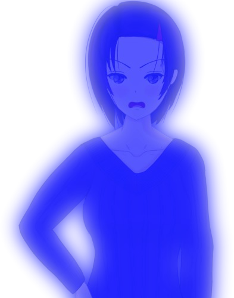
「やばい、私はもうこの世界にいられない……！
頼む……！」
「あなた様、もしやり残したことがおありでしたら、どうぞご自由になさってください」
「あなた様がここにおられる限りは、わたくしもお供いたしますので」
「分かってない！ あんたもしょせんは傍観者だ！ 苦しんでいるのは私だけで、あんたはただ傍観していただけだ！」
「あんたに何が分かるんだ！ あんたはただ、ずっと見ていただけじゃないか！ 私の気も知らないで、偉そうなこと言うなよ！」
「大丈夫って言われても……私はそんなに強くない……」
「やだ……！ やだよ……！
なつみのいない世界で……！ 私が人殺しになった世界で……！
私はどうしたら……！」
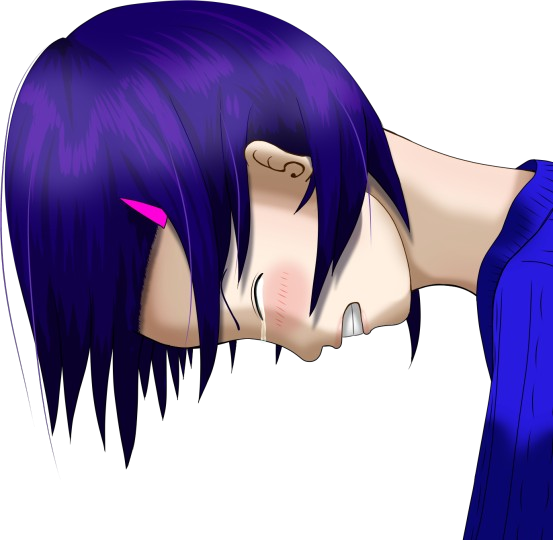
「怖い……逃げたい……
なんで私がこんな目に遭わないといけないんだよ……！」
「春花……」
「うう……何で私……こんな弱虫なんだよ……」
「ねえ春花、聞こえる？」
「うう……何で私……こんな弱虫なんだよ……」
「ねえ春花、聞こえる？」
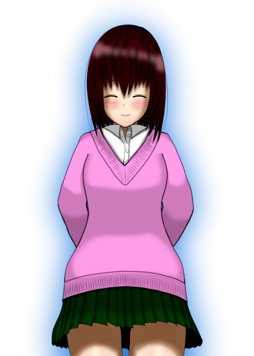
「なつみ……！ 戻ったんじゃないのか……？」
「大切な春花が泣いているのに、置いていったりしないよ」
「大切な春花が泣いているのに、置いていったりしないよ」
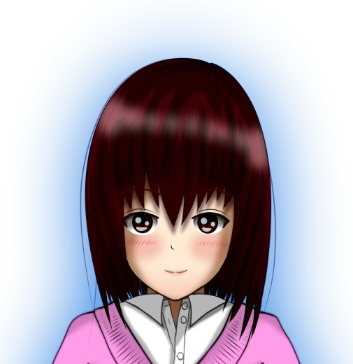
「ねえ春花、今、すごくつらいよね」
「うん……」
「私、春花がつらかったら悲しいよ」
「だから私は、お前と一緒に……」
「だけどね、春花」
「うん……」
「私、春花がつらかったら悲しいよ」
「だから私は、お前と一緒に……」
「だけどね、春花」
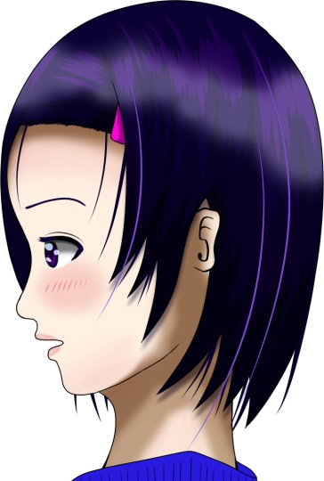
「今、私と一緒に行って、本当にいいの？」
「え……？」
「本当に後悔しない？」
「…………」
「向こうの世界に置いてきた人たちのこと、本当にそのままでいいの？」
「え……？」
「本当に後悔しない？」
「…………」
「向こうの世界に置いてきた人たちのこと、本当にそのままでいいの？」
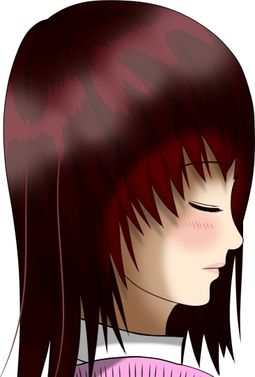
「それは……」
「あのね……私、考えたんだけど……」
「うん……」
「多分、私は春花を助けられないよ」
「え？」
「あのね……私、考えたんだけど……」
「うん……」
「多分、私は春花を助けられないよ」
「え？」
「ここまで苦しんで悩んで、自分がどうするべきかも分かっているのに……。
それでも自分の考えを蹴って私と一緒に来たらどうなる？
春花は後悔し続けると思うよ？」
「後悔……？」
「後悔……？」
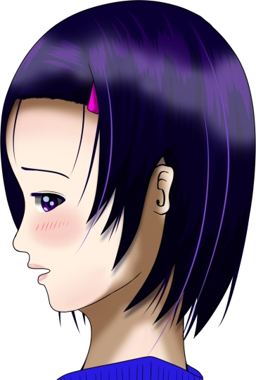
「春花はこのまま私と一緒に帰って、本当に後悔しない？ もう戻れないんだよ？」
「…………」
「…………」
「その悔やむ気持ちは、きっと私にはどうにもできない。
春花がつらいと私も悲しいよ？
でも……でもね。
向こうの世界の人たちを助けられるのは、春花だけなんだよ？」
「そうかもしれないけど……」
「向こうの世界の五島も、春花のお母さんも……。
ううん、お父さんやお母さんも、春花の帰りを待っている。
その人たちを助けられるのは、春花だけ。
春花自身を助けられるのも、春花だけ」
「でも……」
「その人たちを見捨てることになるけど、本当にいい？ 私と一緒に来るってことは、みんなを見捨てることだって分かってるよね？」
「それは……」
「その人たちを見捨てることになるけど、本当にいい？ 私と一緒に来るってことは、みんなを見捨てることだって分かってるよね？」
「それは……」
「もしそれでも私と一緒に行きたいって言うなら止めないよ？ 私も起きたら、ここでのことも忘れてると思うし」
「…………」
「だけどその前に聞かせて。 春花はどうしたい？ どうしたらこの先、幸せになれる？」
「…………」
「だけどその前に聞かせて。 春花はどうしたい？ どうしたらこの先、幸せになれる？」
「私は……
私がすべきことは……」
「春花、違うよ。すべきことじゃないの。 どうしたいかを聞かせて」
「どうしたいか……」
「うん」
「私がしたいのは……。私が望むのは……」
「春花、違うよ。すべきことじゃないの。 どうしたいかを聞かせて」
「どうしたいか……」
「うん」
「私がしたいのは……。私が望むのは……」
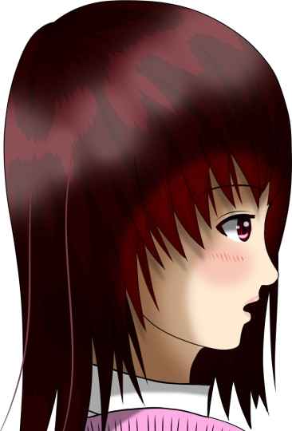
「強くなりたい……」
「強く？」
「私……ずっと弱かった……。 女ケ沢でのことも、今までなつみに頼りっぱなしだったことも……。 何より、ここへ逃げてきたことも……。 全部全部、私が弱いから……」
「強く？」
「私……ずっと弱かった……。 女ケ沢でのことも、今までなつみに頼りっぱなしだったことも……。 何より、ここへ逃げてきたことも……。 全部全部、私が弱いから……」
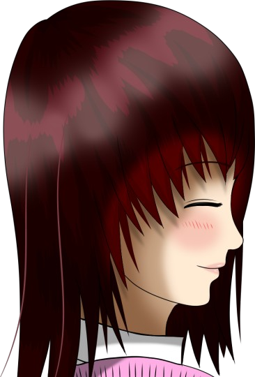
「そっか……春花は強くなりたいんだね」
「うん……」
「でも、私の知っている春花は弱くないよ。私だって、いつも春花に助けてもらってるんだから」
「…………」
「うん……」
「でも、私の知っている春花は弱くないよ。私だって、いつも春花に助けてもらってるんだから」
「…………」
「春花は自信が欲しいんだね。
自分がしたことも、私を失ったことも。それらを受け入れて生きていく自信と勇気が」
「うん……」
「うん……」
「私と一緒に来たら、その自信と勇気って出てくる？」
「………… 出てこないと思う。それだと、今までの私と変わらない」
「そっか……それなら、もう分かってるんじゃないかな？」
「…………」
「………… 出てこないと思う。それだと、今までの私と変わらない」
「そっか……それなら、もう分かってるんじゃないかな？」
「…………」
「だって春花、今でもこうやって踏みとどまっているんだもん。
どうしたらいいか、分かってるでしょ？」
「それは……分かってる。 約束を……守ること」
「約束？」
「それは……分かってる。 約束を……守ること」
「約束？」
「ああ……。約束した人がいるんだ。自分の世界に帰るってさ。
私のことを見捨てず、ここまで一緒に来てくれて……。
私が何度過ちを犯しても、見捨てなかった人がいる。だから……。
その人との約束を守れたら、私は自分のしたことも、なつみがいない現実も、受け入れられる気がする」
「そっか」
「私は、約束を守りたい。そうすれば、強くなれるから。 だから私は……強くなる。ここでなつみにも約束する」
「うん」
「私は、約束を守りたい。そうすれば、強くなれるから。 だから私は……強くなる。ここでなつみにも約束する」
「うん」
「分かってたつもりだったんだけどさ……。
なつみの顔見たら、それが揺らいじゃって……。
はは、バカみたいだ」
「でもそれは仕方のないことだよ。すごくつらいことだって、私にも分かるから」
「でもそれは仕方のないことだよ。すごくつらいことだって、私にも分かるから」
「私、恥ずかしいよ……この期に及んで、まだわがまま言って、約束破ろうとしてさ……。
なつみの言う通りだ。私、なつみと一緒に行ったら、絶対に後悔する。
だけどさ……」
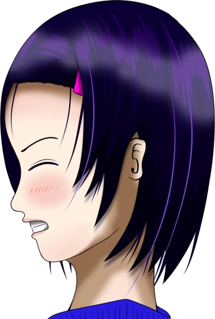
「本当に怖いんだよ……！ お前のいない世界が！ お前を殺した世界に帰るのがさ！
私……そんな世界で生きていけるのかな……」
「ねえ春花、見て」
「ねえ春花、見て」
 video: 永劫回帰改.wmv
video: 永劫回帰改.wmv「これは……？」
「私が春花を思う気持ち。 この世界では、人の心が反映される。 私の心が世界を動かして、こうして春花を思う気持ちが現れた」
「私が春花を思う気持ち。 この世界では、人の心が反映される。 私の心が世界を動かして、こうして春花を思う気持ちが現れた」
video: 永劫回帰改.wmv「春花、世界は変えられるんだよ？
この世界だけじゃない。春花がいた世界だって、きっと春花の心で変えられる。
春花の心が世界を動かす。あとは、春花がどうするかだけ」
video: 永劫回帰改.wmv「でもそれには、きっと強い心が必要だよね。
だからこの世界でだけでも、私の心を見てほしい。
こうやって春花を思う気持ちはずっとずっと消えない。
ずっとずっと続く。ずっとずっとそばにある」
video: 永劫回帰改.wmv「向こうの世界に私はもういないけど……。
もし、つらくなったら、目を閉じてみて。
こうやってまた、私の心が見えるはず。
私の心はずっと春花の心にいるよ。
心の中で、ずっと私が支えてあげる。私の心は、ずっと春花のそばだよ」
video: 永劫回帰改.wmv「ごめんね、こんなことしかできなくて。
でも、例え別の世界の人であっても、私は不幸になってほしくない。
これは私からのお願い。向こうの世界の人たちを、助けてあげて。
これは春花にしかできないこと。ずっと、私がそばについてるから」
video: 永劫回帰改.wmv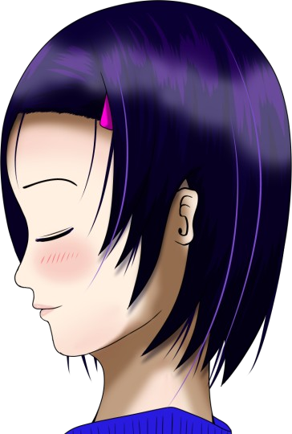
「…………
はは、なつみはほんと、どの次元でもなつみのままだな」
「春花だって、どの世界でも春花のままだよ」
「ふふ、そうだな……」
「春花だって、どの世界でも春花のままだよ」
「ふふ、そうだな……」
video: 永劫回帰改.wmv「なつみ……？」
video: 永劫回帰改.wmv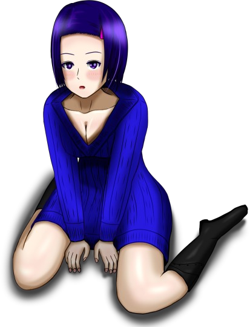
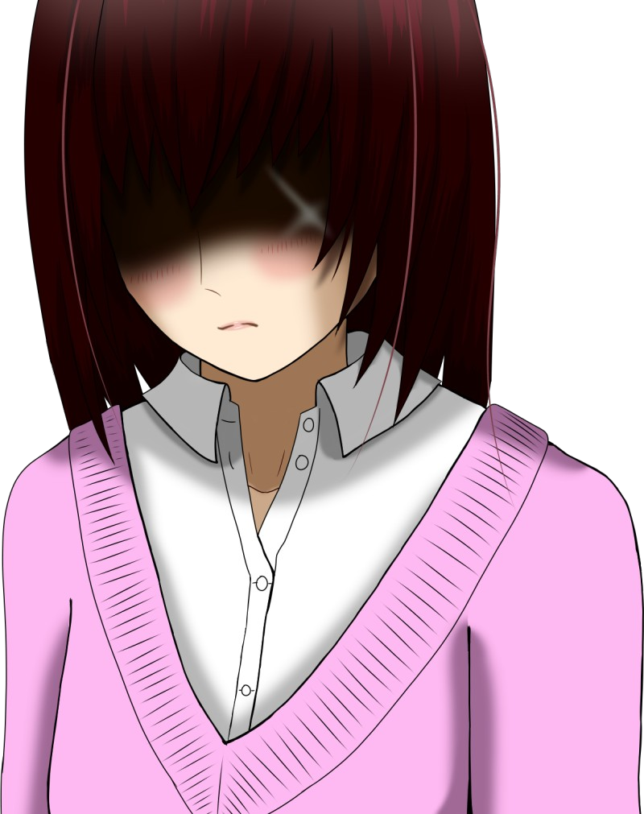
「じゃあ、そろそろ行くね。私、もう起きないと……」
「ま、待ってくれ！」
「ん？」
「ま、待ってくれ！」
「ん？」
video: 永劫回帰改.wmv「私……
私はずっとなつみと一緒だから！ ずっと忘れないから！」
「………… うん……」
「………… うん……」
video: 永劫回帰改.wmv「ちゃんと、向こうのみんなと仲良くやっていくから！」
「………… うん……」
「………… うん……」
video: 永劫回帰改.wmv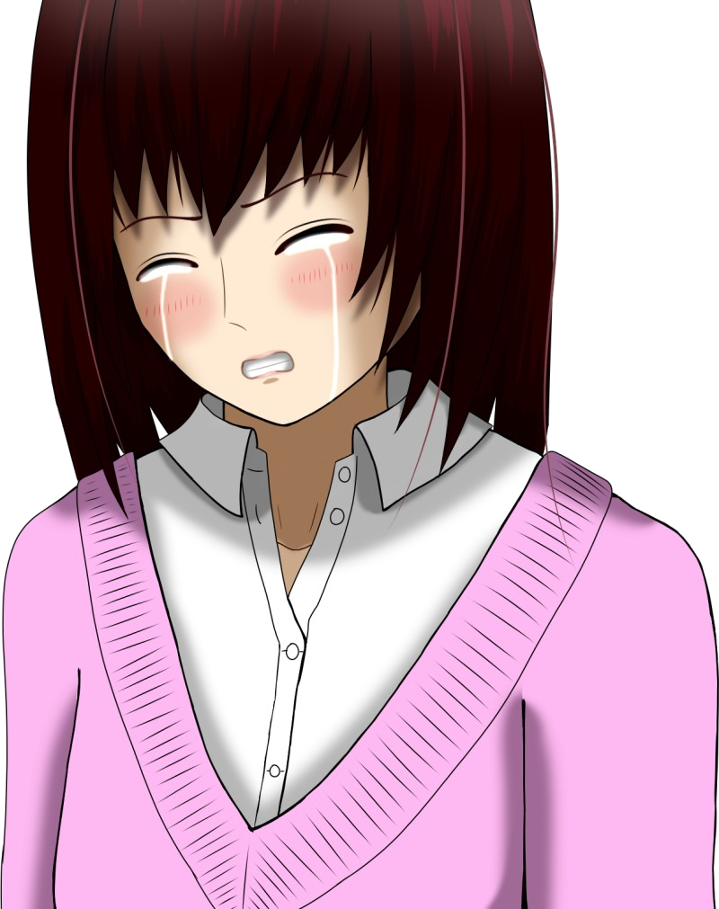
「もう……心配しなくて大丈夫だから……」
「………… ………… うん……」
「………… ………… うん……」
video: 永劫回帰改.wmv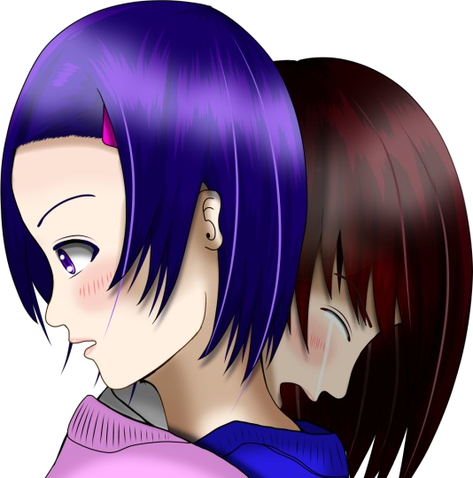
「ごめん！ ごめんね春花！ 一緒にいてあげられなくて！」
video: 永劫回帰改.wmv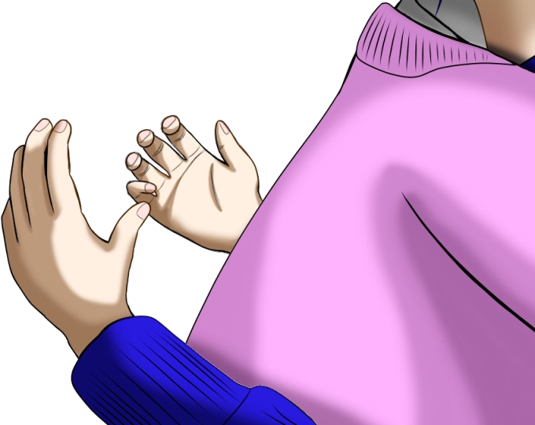
「なつ……」
video: 永劫回帰改.wmv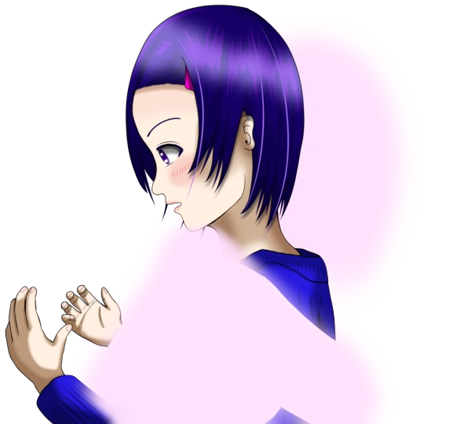
「大好きだよ……」
video: 永劫回帰改.wmv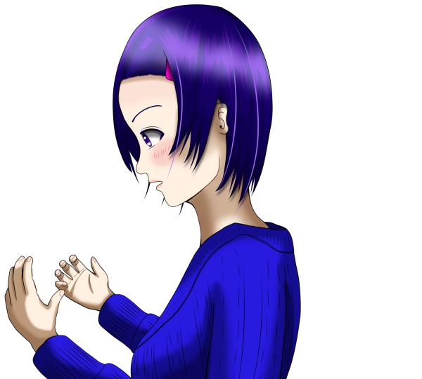
「な……何だよこれ……。
何なんだよ……」
video: 永劫回帰改.wmv「は……
はは……
はははは……。
あっははははは！ 何だよ、あいつ、バッカじゃねーの？
あいつ、何しに来たんだよ……。
どうせならちゃんと最後までかっこつけろよ……。
はは……」
video: 永劫回帰改.wmv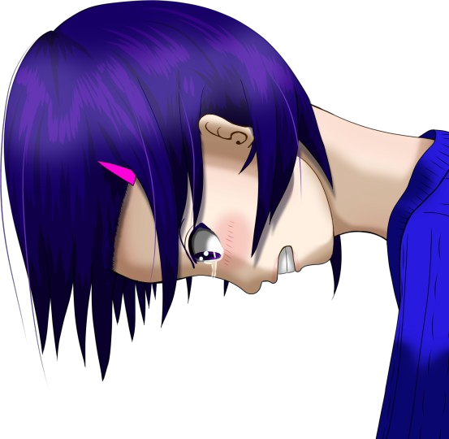
「ふざけんじゃねえよ！ あんな別れ方ないだろ！」
video: 永劫回帰改.wmv「何なんだよあいつ……バカかよ……。
ほんと……バカだよ……。
言いたい放題言いやがって……！ 何がそばにいるだよ……！
だったら泣くんじゃねえよ！
だったら抱きしめんじゃねえよ！」
video: 永劫回帰改.wmv「さよならくらい、ちゃんと言わせてくれよ……。
ほんとにあいつ……なつみはいつもああやって……。
バカかよ……」
video: 永劫回帰改.wmv「…………」
video: 永劫回帰改.wmv「あなた……。
悪かった、何も分かってないなんて言って」
video: 永劫回帰改.wmv「私は弱かった。
いや、今でも弱いと思ってる。
あなたとあれほど約束しておきながら、まだ逃げ腰になっててさ……」
video: 永劫回帰改.wmv「でも……
やっぱり私はこのままじゃダメなんだよ。
このまま逃げ続けたって、私が弱かったら何の意味もない」
video: 永劫回帰改.wmv「だから……私は強くなりたい。強くなるにはどうしたらいいか、もう分かっている」
video: 永劫回帰改.wmv「あなた、あなたとの約束を守れたら、きっと強くなれる。
いや、絶対に強くなれる」
video: 永劫回帰改.wmv「あなたもなつみも、私は大丈夫だと言ってくれた。ずっと私のことを見てきた2人にそう言ってもらえた」
video: 永劫回帰改.wmv「だから……
あなたとなつみの言うことなら信じられる。
私がどうするべきか、あなたの言うことなら信じられる」
video: 永劫回帰改.wmv「だって、今の私のことを分かっているのは、あなただけなんだから」
video: 永劫回帰改.wmv「ふう……。
そう、私はこの世界に逃げてきた。そして今も逃げようとしていた」
video: 永劫回帰改.wmv「目が覚めたよ。もう、大丈夫だから」